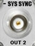

SYS SYNC IN/OUT Connectors (Optional)
 |
SYS SYNC IN and SYS SYNC OUT 1 to 4 are BNC connectors used as input and output connectors for the system synchronization signal.
The connectors are present if an option R&S CMW-S55xM or higher is equipped.
The function of the connectors depends on the "SYS SYNC" setting in the "Sync" section of the setup dialog:
- "Standalone": The connectors are not used.
- "Generator": The instrument provides an identical system synchronization signal at all SYS SYNC OUT connectors.
One SYS SYNC OUT connector must be connected to the SYS SYNC IN connector. The other SYS SYNC OUT connectors can be connected to the SYS SYNC IN connector of other instruments. - "Listener": SYS SYNC IN is used as input connector for a time synchronization signal generated by another R&S CMW.
Only use the cables labeled "SYS SYNC" which are included in the delivery. |
For settings, see "Sync Settings".